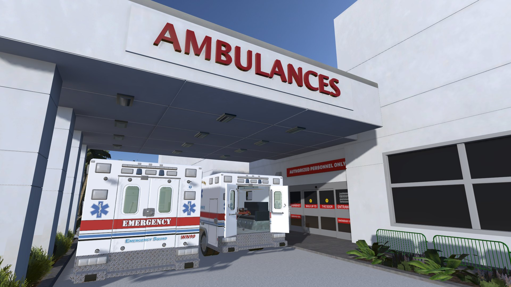

OBSTETRICS
3D | Environment | Visual Design | Unity | SkillsVR | Medical
Aug. 2025 - Present

What is This Project
This project is an interactive VR training simulation designed for EMTs, focused on managing a high-risk postpartum emergency: preeclampsia following a home birth. The experience places the user in a realistic, story-driven scenario inside a Miami household, where a new mother shows signs of severe hypertension shortly after delivery.
Through a sequence of timed decisions, the user performs patient assessment, selects appropriate interventions, administers medications, monitors changing vitals, and coordinates transport and hospital handoff. Each choice directly affects the patient’s condition, reinforcing correct clinical priorities such as early assessment, seizure prevention, blood pressure management, clear communication, and emotional support for both patient and family.
Beyond medical accuracy, the simulation emphasizes human factors. The environment, sound design, character behavior, and dialogue are built to reflect the stress, uncertainty, and responsibility EMTs face in real calls. By combining clinical decision-making with empathy, communication, and post-call debriefing, this project aims to create a training experience that feels realistic, practical, and emotionally grounded rather than purely procedural.
What I Did
As the technical artist and designer, I improved the overall training experience by upgrading the rendering pipeline and redesigning the training environment for clearer, more intuitive user flow. Using game-industry level design principles, I reorganized the experience to better guide users through each step, increasing completion by 15% during pilot sessions. I also quickly upskilled in CC4 and SkillsVR and delivered high-quality assets and integrations on tight timelines, shortening iteration cycles and improving project efficiency.